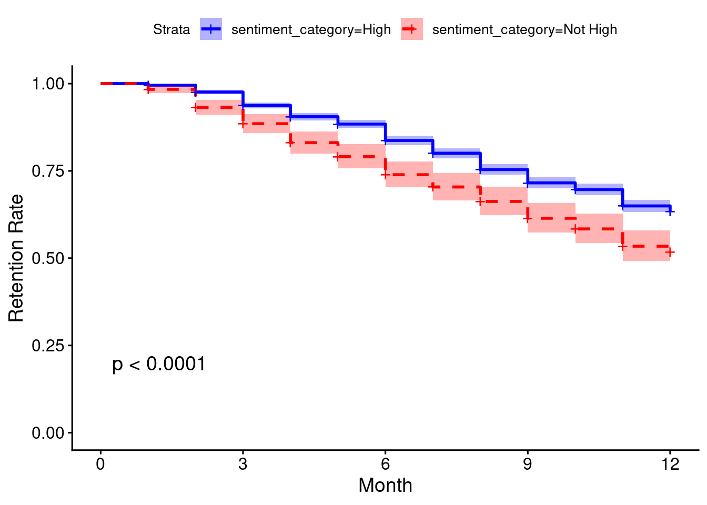

10Survival Analysis for Modeling Singular Events Over Time
In previous chapters, the outcomes we have been modeling have or have not occurred at a particular point in time following when the input variables were measured. For example, in Chapter 4 input variables were measured in the first three years of an education program and the outcome was measured at the end of the fourth year. In many situations, the outcome we are interested in is a singular event that can occur at any time following when the input variables were measured, can occur at a different time for different individuals, and once it has occurred it cannot reoccur or repeat. In medical studies, death can occur or the onset of a disease can be diagnosed at any time during the study period. In employment contexts, an attrition event can occur at various times throughout the year.
An obvious and simple way to deal with this would be to simply agree to look at a specific point in time and measure whether or not the event had occurred at that point, for example, ‘How many employees had left at the three-year point?’. Such an approach allows us to use standard generic regression models like those studied in previous chapters. But this approach has limitations.
Firstly, we are only able to infer conclusions about the likelihood of the event having occurred as at the end of the period of study. We cannot make inferences about the likelihood of the event throughout the period of study. Being able to say that attrition is twice as likely for certain types of individuals at any time throughout the three years is more powerful than merely saying that attrition is twice as likely at the three-year point.
Secondly, our sample size is constrained by the state of our data at the end of the period of study. Therefore if we lose track of an individual after two years and six months, that observation needs to be dropped from our data set if we are focused only on the three-year point. Wherever possible, loss of data is something a statistician will want to avoid as it affects the accuracy and statistical power of inferences, and also means research effort was wasted.
Survival analysis is a general term for the modeling of a time-associated binary non-repeated outcome, usually involving an understanding of the comparative risk of that outcome between two or more different groups of interest. There are two common components in an elementary survival analysis, as follows:
A graphical representation of the future outcome risk of the different groups over time, using survival curves based on Kaplan-Meier estimates of survival rate. This is usually an effective way to establish prima facie relevance of a certain input variable to the survival outcome and is a very effective visual way of communicating the relevance of the input variable to non-statisticians.
A Cox proportional hazard regression model to establish statistical significance of input variables and to estimate the effect of each input variable on the comparative risk of the outcome throughout the study period.
Those seeking a more in depth treatment of survival analysis should consult texts on its use in medical/clinical contexts, and a recommended source is Collett (2015). In this chapter we will use a walkthrough example to illustrate a typical use of survival analysis in a people analytics context.
The job_retention data set shows the results of a study of around 3,800 individuals employed in various fields of employment over a one-year period. At the beginning of the study, the individuals were asked to rate their sentiment towards their job. These individuals were then followed up monthly for a year to determine if they were still working in the same job or had left their job for a substantially different job. If an individual was not successfully followed up in a given month, they were no longer followed up for the remainder of the study period.
# if needed, get job_retention dataurl <-"http://peopleanalytics-regression-book.org/data/job_retention.csv"job_retention <-read.csv(url)head(job_retention)
gender field level sentiment intention left month
1 M Public/Government High 3 8 1 1
2 F Finance Low 8 4 0 12
3 M Education and Training Medium 7 7 1 5
4 M Finance Low 8 4 0 12
5 M Finance High 7 6 1 1
6 F Health Medium 6 10 1 2
For this walkthrough example, the particular fields we are interested in are:
gender: The gender of the individual studied
field: The field of employment that they worked in at the beginning of the study
level: The level of the position in their organization at the beginning of the study—Low, Medium or High
sentiment: The sentiment score reported on a scale of 1 to 10 at the beginning of the study, with 1 indicating extremely negative sentiment and 10 indicating extremely positive sentiment
left: A binary variable indicating whether or not the individual had left their job as at the last follow-up
month: The month of the last follow-up
10.1 Tracking and illustrating survival rates over the study period
In our example, we are defining ‘survival’ as ‘remaining in substantially the same job’. We can regard the starting point as month 0, and we are following up in each of months 1 through 12. For a given month \(i\), we can define a survival rate \(S_i\) as follows
\[
S_i = S_{i - 1}(1 - \frac{l_i}{n_i})
\] where \(l_i\) is the number reported as left in month \(i\), and \(n_i\) is the number still in substantially the same job after month \(i - 1\), with \(S_0 = 1\).
The survival package in R allows easy construction of survival rates on data in a similar format to that in our job_retention data set. A survival object is created using the Surv() function to track the survival rate at each time period.
library(survival)# create survival object with event as 'left' and time as 'month'retention <-Surv(event = job_retention$left, time = job_retention$month)# view unique values of retentionunique(retention)
We can see that our survival object records the month at which the individual had left their job if they are recorded as having done so in the data set. If not, the object records the last month at which there was a record of the individual, appended with a ‘+’ to indicate that this was the last record available.
The survfit() function allows us to calculate Kaplan-Meier estimates of survival for different groups in the data so that we can compare them. We can do this using our usual formula notation but using a survival object as the outcome. Let’s take a look at survival by gender.
# kaplan-meier estimates of survival by genderkmestimate_gender <- survival::survfit(formula =Surv(event = left, time = month) ~ gender, data = job_retention)summary(kmestimate_gender)
We can see that the n.risk, n.event and survival columns for each group correspond to the \(n_i\), \(l_i\) and \(S_i\) in our formula above and that the confidence intervals for each survival rate are given. This can be very useful if we wish to illustrate a likely effect of a given input variable on survival likelihood.
Let’s imagine that we wish to determine if the sentiment of the individual had an impact on survival likelihood. We can divide our population into two (or more) groups based on their sentiment and compare their survival rates.
# create a new field to define high sentiment (>= 7)job_retention$sentiment_category <-ifelse( job_retention$sentiment >=7, "High", "Not High")# generate survival rates by sentiment categorykmestimate_sentimentcat <- survival::survfit(formula =Surv(event = left, time = month) ~ sentiment_category,data = job_retention)summary(kmestimate_sentimentcat)
We can see that survival seems to consistently trend higher for those with high sentiment towards their jobs. The ggsurvplot() function in the survminer package can visualize this neatly and also provide additional statistical information on the differences between the groups, as shown in Figure 10.1.
library(survminer)# show survival curves with p-value estimate and confidence intervalssurvminer::ggsurvplot( kmestimate_sentimentcat,pval =TRUE,conf.int =TRUE,palette =c("blue", "red"),linetype =c("solid", "dashed"),xlab ="Month",ylab ="Retention Rate")

Figure 10.1: Survival curves by sentiment category in the job_retention data
This confirms that the survival difference between the two sentiment groups is statistically significant and provides a highly intuitive visualization of the effect of sentiment on retention throughout the period of study.
10.2 Cox proportional hazard regression models
Let’s imagine that we have a survival outcome that we are modeling for a population over a time \(t\), and we are interested in how a set of input variables \(x_1, x_2, \dots, x_p\) influences that survival outcome. Given that our survival outcome is a binary variable, we can model survival at any time \(t\) as a binary logistic regression. We define \(h(t)\) as the proportion who have not survived at time \(t\), called the hazard function, and based on our work in Chapter 5:
\[
h(t) = h_0(t)e^{\beta_1x_1 + \beta_2x_2 + \dots + \beta_px_p}
\] where \(h_0(t)\) is a base or intercept hazard at time \(t\), and \(\beta_i\) is the coefficient associated with \(x_i\) .
Now let’s imagine we are comparing the hazard for two different individuals \(A\) and \(B\) from our population. We make an assumption that our hazard curves \(h^A(t)\) for individual \(A\) and \(h^B(t)\) for individual \(B\) are always proportional to each other and never cross—this is called the proportional hazard assumption. Under this assumption, we can conclude that
Note that there is no \(t\) in our final equation. The important observation here is that the hazard for person B relative to person A is constant and independent of time. This allows us to take a complicating factor out of our model. It means we can model the effect of input variables on the hazard without needing to account for changes over times, making this model very similar in interpretation to a standard binomial regression model.
10.2.1 Running a Cox proportional hazard regression model
A Cox proportional hazard model can be run using the coxph() function in the survival package, with the outcome as a survival object. Let’s model our survival against the input variables gender, field, level and sentiment.
# run cox model against survival outcomecox_model <- survival::coxph(formula =Surv(event = left, time = month) ~ gender + field + level + sentiment,data = job_retention)summary(cox_model)
Coefficients for each input variable and their p-values. Here we can conclude that working in Finance or Health is associated with a significantly greater likelihood of leaving over the period studied, and that higher sentiment is associated with a significantly lower likelihood of leaving.
Relative odds ratios associated with each input variable. For example, a single extra point in sentiment reduces the odds of leaving by ~11%. A single less point increases the odds of leaving by ~12%. Confidence intervals for the coefficients are also provided.
Three statistical tests on the null hypothesis that the coefficients are zero. This null hypothesis is rejected by all three tests which can be interpreted as meaning that the model is significant.
Importantly, as well as statistically validating that sentiment has a significant effect on retention, our Cox model has allowed us to control for possible mediating variables. We can now say that sentiment has a significant effect on retention even for individuals of the same gender, in the same field and at the same level.
10.2.2 Checking the proportional hazard assumption
Note that we mentioned in the previous section a critical assumption for our Cox proportional hazard model to be valid, called the proportional hazard assumption. As always, it is important to check this assumption before finalizing any inferences or conclusions from your model.
The most popular test of this assumption uses a residual known as a Schoenfeld residual, which would be expected to be independent of time if the proportional hazard assumption holds. The cox.zph() function in the survival package runs a statistical test on the null hypothesis that the Schoenfeld residuals are independent of time. The test is conducted on every input variable and on the model as a whole, and a significant result would reject the proportional hazard assumption.
(ph_check <- survival::cox.zph(cox_model))
chisq df p
gender 0.726 1 0.39
field 6.656 5 0.25
level 2.135 2 0.34
sentiment 1.828 1 0.18
GLOBAL 11.156 9 0.27
In our case, we can confirm that the proportional hazard assumption is not rejected. The ggcoxzph() function in the survminer package takes the result of the cox.zph() check and allows a graphical check by plotting the residuals against time, as seen in Figure 10.2.
Figure 10.2: Schoenfeld test on proportional hazard assumption for cox_model
10.3 Frailty models
We noticed in our example in the previous section that certain fields of employment appeared to have a significant effect on the attrition hazard. It is therefore possible that different fields of employment have different base hazard functions, and we may wish to take this into account in determining if input variables have a significant relationship with attrition. This is analogous to a mixed model which we looked at in Section 9.1.
In this case we would apply a random intercept effect to the base hazard function \(h_0(t)\) according to the field of employment of an individual, in order to take this into account in our modeling. This kind of model is called a frailty model, taken from the clinical context, where different groups of patients may have different frailties (background risks of death).
There are many variants of how frailty models are run in the clinical context (see Collett (2015) for an excellent exposition of these), but the main application of a frailty model in people analytics would be to adapt a Cox proportional hazard model to take into account different background risks of the hazard event occurring among different groups in the data. This is called a shared frailty model. The frailtypack R package allows various frailty models to be run with relative ease. This is how we would run a shared frailty model on our job_retention data to take account of the different background attrition risk for the different fields of employment.
Be patient. The program is computing ...
The program took 0.61 seconds
Call:
frailtypack::frailtyPenal(formula = Surv(event = left, time = month) ~
gender + level + sentiment + cluster(field), data = job_retention,
n.knots = 12, kappa = 10000)
Shared Gamma Frailty model parameter estimates
using a Penalized Likelihood on the hazard function
coef exp(coef) SE coef (H) SE coef (HIH) z p
genderM -0.0295295 0.970902 0.0593400 0.0593400 -0.497632 6.1874e-01
levelLow 0.1985599 1.219645 0.0927706 0.0927706 2.140332 3.2328e-02
levelMedium 0.2232823 1.250174 0.1043782 0.1043782 2.139166 3.2422e-02
sentiment -0.1082618 0.897393 0.0143427 0.0143427 -7.548237 4.4076e-14
chisq df global p
level 5.17425 2 0.0752
Frailty parameter, Theta: 48.3192 (SE (H): 33.2451 ) p = 0.073053
penalized marginal log-likelihood = -5510.36
Convergence criteria:
parameters = 6.55e-05 likelihood = 9.89e-06 gradient = 6.43e-09
LCV = the approximate likelihood cross-validation criterion
in the semi parametrical case = 1.46587
n= 3770
n events= 1354 n groups= 6
number of iterations: 18
Exact number of knots used: 12
Value of the smoothing parameter: 10000, DoF: 6.31
We can see that the frailty parameter is significant, indicating that there is sufficient difference in the background attrition risk to justify the application of a random hazard effect. We also see that the level of employment now becomes more significant in addition to sentiment, with Low and Medium level employees more likely to leave compared to High level employees.
The frailtyPenal() function can also be a useful way to observe the different baseline survivals for groups in the data. For example, a simple stratified Cox proportional hazard model based on sentiment category can be constructed2.
Figure 10.3: Baseline retention curves for the two sentiment categories in the job_retention data set
NULL NULL
10.4 Survival analysis using Python
The lifelines package in Python is designed to support survival analysis, with functions to calculate survival estimates, plot survival curves, perform Cox proportional hazard regression and check proportional hazard assumptions. A full tutorial is available here.
Here is an example of how to plot Kaplan-Meier survival curves in Python using this chapter’s walkthrough example. The survival curves are displayed in Figure 10.4.
import pandas as pdfrom lifelines import KaplanMeierFitterfrom matplotlib import pyplot as plt# get dataurl ="http://peopleanalytics-regression-book.org/data/job_retention.csv"job_retention = pd.read_csv(url)# fit our data to Kaplan-Meier estimatesT = job_retention["month"]E = job_retention["left"]kmf = KaplanMeierFitter()kmf.fit(T, event_observed = E)
# split into high and not high sentimenthighsent = (job_retention["sentiment"] >=7)# set up plotsurvplot = plt.subplot()# plot high sentiment survival functionkmf.fit(T[highsent], event_observed = E[highsent], label ="High Sentiment")
kmf.plot_survival_function(ax = survplot)# plot not high sentiment survival functionkmf.fit(T[~highsent], event_observed = E[~highsent], label ="Not High Sentiment")
Figure 10.4: Survival curves by sentiment category in the job_retention data
And here is an example of how to fit a Cox Proportional Hazard model similarly to Section 10.24.
from lifelines import CoxPHFitter# fit Cox PH model to job_retention datacph = CoxPHFitter()cph.fit(job_retention, duration_col ='month', event_col ='left', formula ="gender + field + level + sentiment")
# view resultscph.print_summary()
<lifelines.CoxPHFitter: fitted with 3770 total observations, 2416 right-censored observations>
duration col = 'month'
event col = 'left'
baseline estimation = breslow
number of observations = 3770
number of events observed = 1354
partial log-likelihood = -10724.52
time fit was run = 2025-11-13 22:18:17 UTC
---
coef exp(coef) se(coef) coef lower 95% coef upper 95% exp(coef) lower 95% exp(coef) upper 95%
covariate
gender[T.M] -0.05 0.96 0.06 -0.16 0.07 0.85 1.07
field[T.Finance] 0.22 1.25 0.07 0.09 0.35 1.10 1.43
field[T.Health] 0.28 1.32 0.13 0.03 0.53 1.03 1.70
field[T.Law] 0.11 1.11 0.15 -0.18 0.39 0.84 1.48
field[T.Public/Government] 0.11 1.12 0.09 -0.06 0.29 0.94 1.34
field[T.Sales/Marketing] 0.09 1.09 0.10 -0.11 0.29 0.89 1.33
level[T.Low] 0.15 1.16 0.09 -0.03 0.32 0.97 1.38
level[T.Medium] 0.18 1.19 0.10 -0.02 0.38 0.98 1.46
sentiment -0.12 0.89 0.01 -0.14 -0.09 0.87 0.91
cmp to z p -log2(p)
covariate
gender[T.M] 0.00 -0.77 0.44 1.19
field[T.Finance] 0.00 3.34 <0.005 10.24
field[T.Health] 0.00 2.16 0.03 5.02
field[T.Law] 0.00 0.73 0.47 1.10
field[T.Public/Government] 0.00 1.29 0.20 2.35
field[T.Sales/Marketing] 0.00 0.86 0.39 1.36
level[T.Low] 0.00 1.65 0.10 3.32
level[T.Medium] 0.00 1.73 0.08 3.58
sentiment 0.00 -8.41 <0.005 54.49
---
Concordance = 0.58
Partial AIC = 21467.04
log-likelihood ratio test = 89.18 on 9 df
-log2(p) of ll-ratio test = 48.58
Proportional Hazard assumptions can be checked using the check_assumptions() method5.
The ``p_value_threshold`` is set at 0.05. Even under the null hypothesis of no violations, some
covariates will be below the threshold by chance. This is compounded when there are many covariates.
Similarly, when there are lots of observations, even minor deviances from the proportional hazard
assumption will be flagged.
With that in mind, it's best to use a combination of statistical tests and visual tests to determine
the most serious violations. Produce visual plots using ``check_assumptions(..., show_plots=True)``
and looking for non-constant lines. See link [A] below for a full example.
<lifelines.StatisticalResult: proportional_hazard_test>
null_distribution = chi squared
degrees_of_freedom = 1
model = <lifelines.CoxPHFitter: fitted with 3770 total observations, 2416 right-censored observations>
test_name = proportional_hazard_test
---
test_statistic p -log2(p)
field[T.Finance] km 1.20 0.27 1.88
rank 1.09 0.30 1.76
field[T.Health] km 4.27 0.04 4.69
rank 4.10 0.04 4.54
field[T.Law] km 1.14 0.29 1.81
rank 0.85 0.36 1.49
field[T.Public/Government] km 1.92 0.17 2.59
rank 1.87 0.17 2.54
field[T.Sales/Marketing] km 2.00 0.16 2.67
rank 2.22 0.14 2.88
gender[T.M] km 0.41 0.52 0.94
rank 0.39 0.53 0.91
level[T.Low] km 1.53 0.22 2.21
rank 1.52 0.22 2.20
level[T.Medium] km 0.09 0.77 0.38
rank 0.13 0.72 0.47
sentiment km 2.78 0.10 3.39
rank 2.32 0.13 2.97
1. Variable 'field[T.Health]' failed the non-proportional test: p-value is 0.0387.
Advice: with so few unique values (only 2), you can include `strata=['field[T.Health]', ...]` in
the call in `.fit`. See documentation in link [E] below.
---
[A] https://lifelines.readthedocs.io/en/latest/jupyter_notebooks/Proportional%20hazard%20assumption.html
[B] https://lifelines.readthedocs.io/en/latest/jupyter_notebooks/Proportional%20hazard%20assumption.html#Bin-variable-and-stratify-on-it
[C] https://lifelines.readthedocs.io/en/latest/jupyter_notebooks/Proportional%20hazard%20assumption.html#Introduce-time-varying-covariates
[D] https://lifelines.readthedocs.io/en/latest/jupyter_notebooks/Proportional%20hazard%20assumption.html#Modify-the-functional-form
[E] https://lifelines.readthedocs.io/en/latest/jupyter_notebooks/Proportional%20hazard%20assumption.html#Stratification
[]
10.5 Learning exercises
10.5.1 Discussion questions
Describe some of the reasons why a survival analysis is a useful tool for analyzing data where outcome events happen at different times.
Describe the Kaplan-Meier survival estimate and how it is calculated.
What are some common uses for survival curves in practice?
Why is it important to run a Cox proportional hazard model in addition to calculating survival estimates when trying to understand the effect of a given variable on survival?
Describe the assumption that underlies a Cox proportional hazard model and how this assumption can be checked.
What is a frailty model, and why might it be useful in the context of survival analysis?
10.5.2 Data exercises
For these exercises, use the same job_retention data set as in the walkthrough example for this chapter, which can be loaded via the peopleanalyticsdata package or downloaded from the internet6. The intention field represents a score of 1 to 10 on the individual’s intention to leave their job in the next 12 months, where 1 indicates an extremely low intention and 10 indicates an extremely high intention. This response was recorded at the beginning of the study period.
Create three categories of intention as follows: High (score of 7 or higher), Moderate (score of 4–6), Low (score of 3 or less)
Calculate Kaplan-Meier survival estimates for the three categories and visualize these using survival curves.
Determine the effect of intention on retention using a Cox proportional hazard model, controlling for gender, field and level.
Perform an appropriate check that the proportional hazard assumption holds for your model.
Run a similar model, but this time include the sentiment input variable. How would you interpret the results?
Experiment with running a frailty model to take into account the different background attrition risk by field of employment.
Collett, David. 2015. Modelling Survival Data in Medical Research.
The concordance measure returned is a measure of how well the model can predict in any given pair who will survive longer and is valuable in a number of medical research contexts.↩︎
Note there needs to be a kappa for each level of the stratification.↩︎
This is another route to calculating survival curves similar to Figure 10.1.↩︎
I am not aware of any way of running frailty models currently in Python.↩︎
Schoenfeld residual plots can be seen by setting show_plots = True in the parameters.↩︎